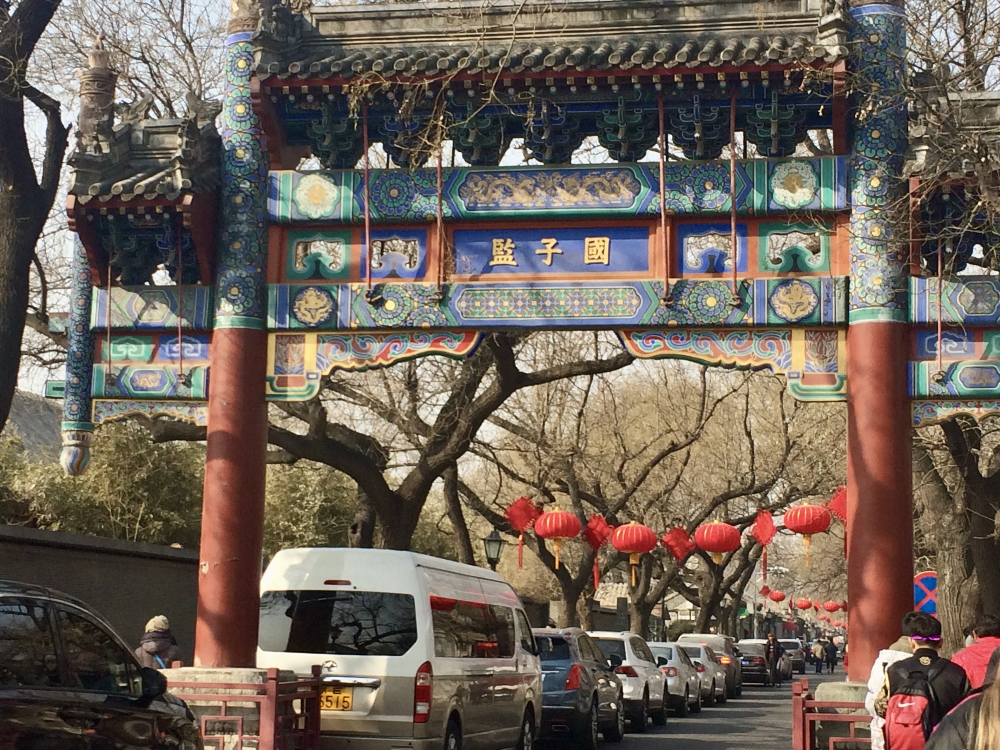

Beijing, China


Beijing es la capital de la Repúbilica Popular China, una de las ciudades con más habitantes del mundo y un destino turístico con mil y un cosas por hacer.
¿A dónde ir?
- La Ciudad Prohibida. También conocida como el Palacio Imperial, la Ciudad Prohibida se encuentra ubicada en el centro de Beijing. Este complejo fue el "centro del poder de las dinastías Ming (1368-1644) y Qing (1644-1911) durante un largo periodo desde 1420 hasta 1912" (Embajada de la República Popular China en Venezuela, 2005a). La ciudad obtuvo su apodo debido a que "las personas corrientes no podían entrar sin permisos especiales en aquella época y sólo los cortesanos podían obtener audiencia del emperador" (Embajada de la República Popular China en Venezuela, 2005a). Debido a su magnifica arquitectura y colección cultural, la Ciudad Prohibida es un destino visitado por más de siete millones de visitantes al año.
- El Templo de Confucio. El Templo de Conficio fue construido un año despues la muerte de aquel maestro cuyo nombre ahora lleva. La que era su residencia se expandió para dar paso a un espacio donde se pudiera difundir su pensamiento: el confucianismo (Embajada de la República Popular China en Venezuela, 2005b).
- El Palacio de Verano. "Construido en 1750, destruido en su mayor parte durante la guerra de 1860 y reconstruido sobre sus cimientos en 1886, el palacio de verano de Beijing es una obra maestra del arte paisajístico chino" (UNESCO, s.f.). El palacio se compone de un conjunto de lagos, colinas y jardines. "A la vez aprovecha la Montaña del Oeste y la Montaña Yuquan de sus alrededores como telón de fondo, donde se combinan las construcciones artificiales y los paisajes naturales, lo que es calificado como un excelente ejemplo del arte de la jardinería" (Embajada de la República Popular China en Venezuela, 2005c).
Referencias
- Embajada de la República Popular China en Venezuela. (Agosto, 2005). La Ciudad Prohibida de Beijing. Embajada de la República Popular China en Venezuela. http://ve.china-embassy.gov.cn/esp/wh/qian24/qian347/
- Embajada de la República Popular China en Venezuela. (Septiembre, 2005). El Templo de Confucio. Embajada de la República Popular China en Venezuela. http://ve.china-embassy.gov.cn/esp/wh/qian24/qian377/
- Embajada de la República Popular China en Venezuela. (Septiembre, 2005). El Palacio de Verano. Embajada de la República Popular China en Venezuela. http://ve.china-embassy.gov.cn/esp/wh/qian24/qian376/
- UNESCO. (s.f.). Palacio de verano y jardín imperial de Beijing. UNESCO. https://whc.unesco.org/es/list/880